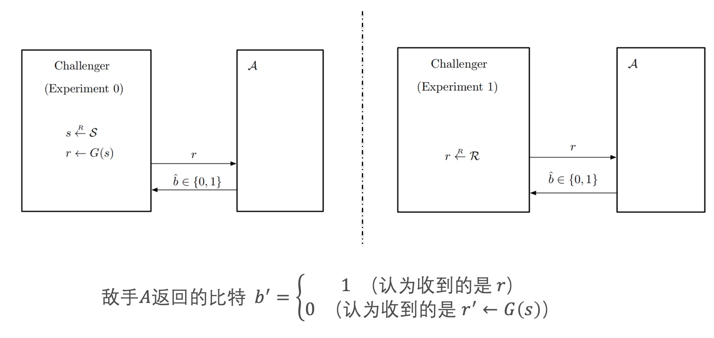

PRG(Pseudo-random generators)的安全性
伪随机数生成器G是在(S,R)上的一个高效的确定性算法
它以一个密钥s作为输入，输出一个比特串r，密钥空间和输出空间分别为
攻击游戏1
一个在(𝑆,𝑅)上的PRG G，有一个挑战者和一个敌手𝒜，设计了实验0和实验1

- 在G上敌手𝒜的优势:
- 敌手无法分辨收到的来源
PRG的安全性是通过攻击游戏来定义的：
定义（安全的PRG）：
如果PRG G对于所有有效敌手𝒜的PRGadv[𝒜,𝐺]是可忽略的，则G是安全的
攻击游戏1（比特猜测）
- 挑战者随机选择$𝑏∈{0,1}$，运行实验$𝑏$
- 敌手的目标是猜测$𝑏$，成功的概率$>\frac{1}{2}$
- 敌手𝒜优势：
比特猜测是将两个不同的实验 $\Longrightarrow$ 一个单独的实验，可以看到两个版本的安全性定义是一致的
流密码的语义安全性
密码方案具备语义安全性$\Longleftrightarrow$无法分辨$𝑚_0,𝑚_1$
定理： 如果G是一个安全的PRG，则由G构造的流密码$\varepsilon$是语义安全的。即：在给定$\varepsilon$的敌手$\mathcal{A}$的情况下存在对于G的敌手$\mathcal{B}$满足
证明思路
- 用一个真正随机的字符串替换PRG的输出，不会对$\mathcal{A}$的优势造成太大的影响，替换后$\mathcal{A}$的优势依然为零。
- 通过调用，联系敌手$\mathcal{A}$和敌手$\mathcal{B}$
证明:
敌手$\mathcal{A}$攻击$\varepsilon$
敌手$\mathcal{B}$攻击$G$
游戏0:
- 敌手$\mathcal{A}$给挑战者两个明文$𝑚_0,𝑚_1$，
- 挑战者选择一个随机比特$𝑏$,通过PRG生成的密钥加密$𝑚_𝑏$，
- 将密文结果 $𝑐$ 返回给$\mathcal{A}$
- $𝑊_0: 𝑏=\hat{b}$，游戏0攻击成功
游戏1:
与游戏0唯一的区别：用真正随机的字符串替换PRG的输出
- $𝑊_1: 𝑏=\hat{b}$，显然有：
敌手$\mathcal{B}$攻击PRG:
($\mathcal{B}$调用$\mathcal{A}$：建立两个敌手优势之间的关系)
- $\mathcal{B}$ 收到 $𝐿−𝑏𝑖𝑡$ 的随机的字符串 $r$ （不知道生成方式），并$\mathcal{B}$ 随机选择一个比特 $ 𝑏$ ，用 $r$ 加密 $𝑚_𝑏$
- 密文结果 $𝑐$ 返回给 $\mathcal{A}$，$\mathcal{A}$输出一个比特 $\hat{b}$
- $\mathcal{B}$输出 $\delta(\hat{b},𝑏)$
若只看挑战者和$\mathcal{B}$两方，可以看作攻击游戏1
- $𝑝_0:$实验0中输出1的概率，
- $𝑝_1:$实验1中输出1的概率，
显然$\mathcal{B}$的优势为：
因此：
得证
上述内容仅用于非领域人员快速了解，具体实现逻辑及细节不做展示
Welcome to MinZhang’s space! If you have any questions about the following issues, you can contact me on GitHub or email- zhangmin2022@iie.ac.cn.